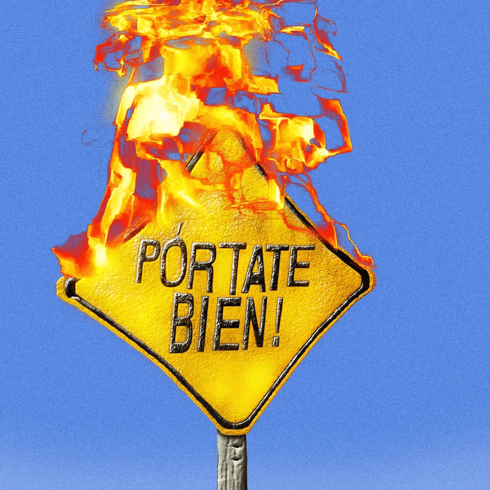
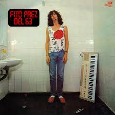
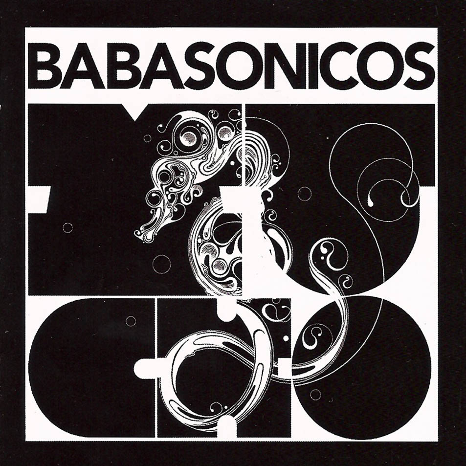
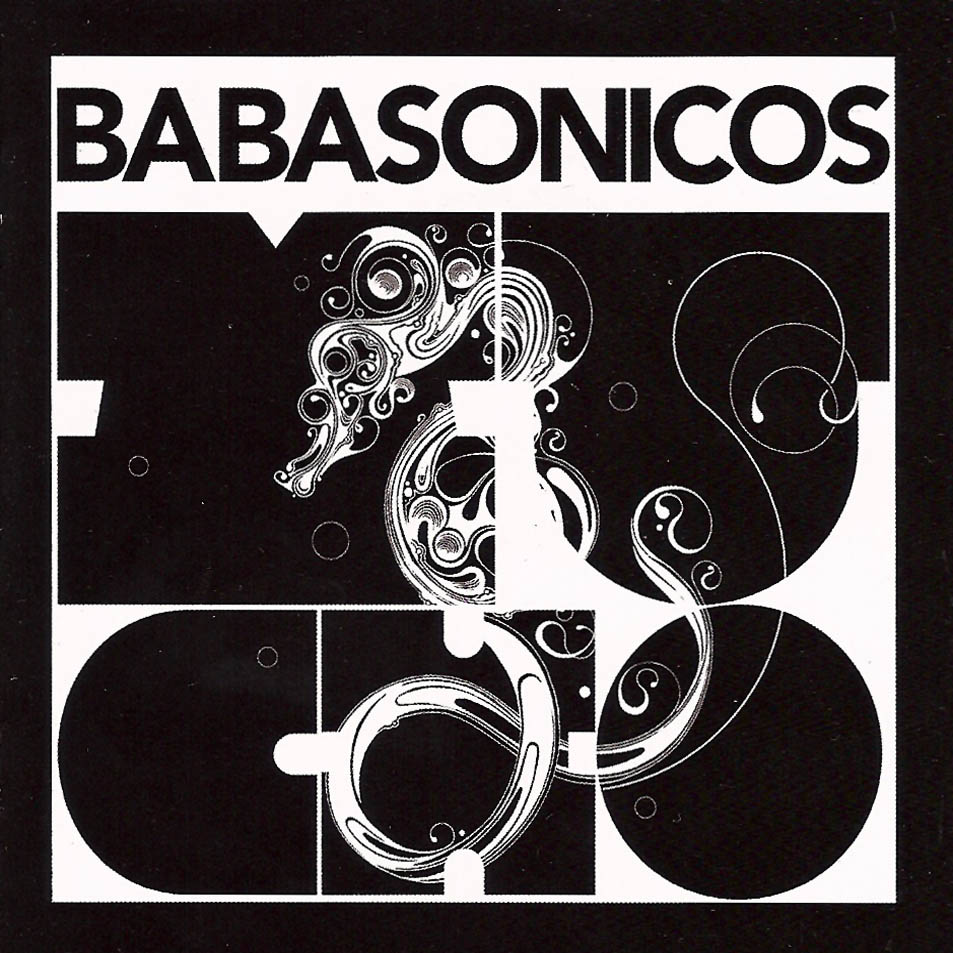
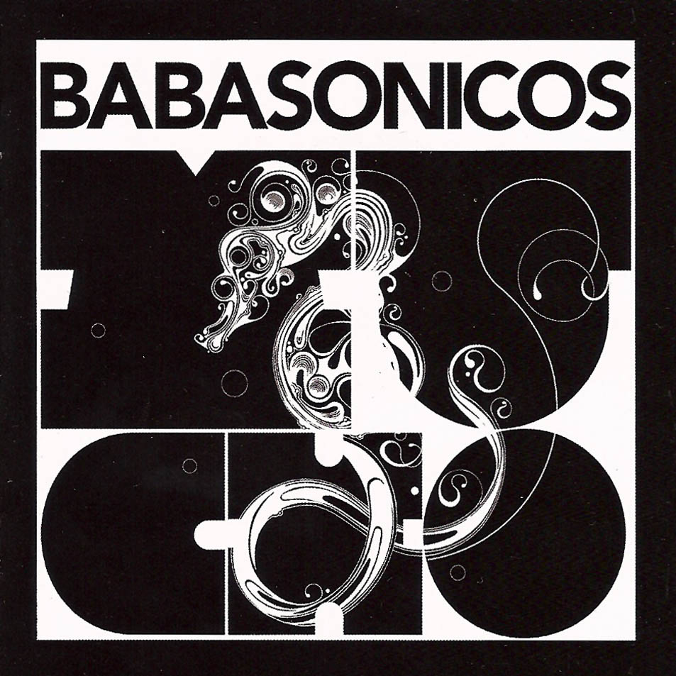

Sector Personal
Mis preferidos:
- Mvrk Me ha acompañado en momentos felices, a tendido la luz cada vez que lo he escuchado, levantando mi animo y haciendome recordar cada momento con amigos
- Fito me recuerda a mi ultimo viaje a mar del plata, y a un momento en mi vida de soledad, donde lo unico que tenia era la musica
- Virus me deja un recuerdo muy parecido a Fito, fascinado desde la primera vez que los escuche, me hizo adentrarme en la musica de los 80s
- Los babasonicos siempre suben el animo, tengo el disco fisico y simepre que puedo lo escucho, es una de esas bandas que te hace cantar cada tema


 


He elegido estos albumes como mis favoritos porque marcaron momentos importantes en mi vida, cuando he pasado tanto momentos dificiles como muy felices, fue escuchando cada uno de estos discos.